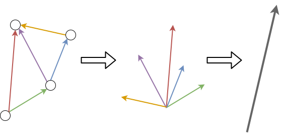

The distribution of people all over the world is highly dynamic. People travel for a variety of reasons and often migrate permanently to new countries. This can happen because of work or for personal reasons but sometimes is not a choice at all. Sometimes is the only way to avoid persecution based on race, religion or political opinion.
When that is the case the individuals forced to leave their country are called "refugees". The 1951 Refugee Convention,ratified by 145 State parties, is the key legal document on the matter. It defines the term ‘refugee’ and outlines the rights of the displaced, as well as the legal obligations of States to protect them. The core principle is non-refoulement, which asserts that a refugee should not be returned to a country where they face serious threats to their life or freedom. This is now considered a rule of customary international law.
The United Nations High Commissioner for Refugees (UNHCR) serves as the ‘guardian’ of the 1951 Convention and its 1967 Protocol. The UNHCR makes all his data concerning refugees publicy available but extracting insights from massive spreadsheets is not always easy. Here we present a visual perspective on the dynamic of the flow of asylum seekers over time.
– 1951 UNHCR convention relating to the status of refugeesA refugee is someone who is unable or unwilling to return to their country of origin owing to a well-founded fear of being persecuted for reasons of race, religion, nationality, membership of a particular social group, or political opinion.
People don't have to "apply" to become a refugee. As soon as the conditions outlined in the 1951 convention are met individuals are automatically considered refugees. However, to have their status legally recognized by governments they have to undergo a Refugee Status Determination (RSD) process.
This process starts by asking a foreign country for asylum. Every month thousands of refugees are forced to cross borders and the Convention stipulates that refugees should not be penalized for their illegal entry or stay. This recognizes that the seeking of asylum can require refugees to breach immigration rules. Prohibited penalties might include being charged with immigration or criminal offences relating to the seeking of asylum, or being arbitrarily detained purely on the basis of seeking asylum.
Monthly data regarding the amount of asylum seekers applying for entry in a specifc country is made available by the UNHCR along with informations about their origin (when possible). As we can see in the map above this naturally leads to the creation of an intricate network. For the sake of visualization the map reports the movement of groups of at least 100 individuals.
From a network point of view the movement of asylum seekers form a temporal directed geometric graph. It is temporal because even if the main edges (in terms of asylum seekers travelling across them) persist across time many smaller ones appear and disappear as a function of time. Is is also geometric in nature since the node (i.e. countries) are embedded in a phisical space, a 3D one to be precise but here for the sake of simplicity were are going to consider their projection on a 2D plane using the UTM and therefore form an Euclidean graph.
The fact that nodes are spatially located provides a useful extra piece of information. While in non-geometric graphs we usually characterize a node by the in/out-degree distribution, now we have an extra piece of information to work with, the angle between edges. As we can see in the visualization above this means that every point has a distinctive "fingerprint" given by the shape of unit vectors pointing to other nodes. If we consider the unit vector distribution for a specific node as a sort of "view" from that node it could happen that if the nodes' spatial distribution has a symmetric structure we would have "view" from different place but that is not an issue in this context, countries are fairly irregular. It is now natural to ask oneself, can we leverage this spatial information to visualize the movement of asylum seekers over time?
Since nodes have coordinates associated to them we can treat edges as if they were vectors. These vectors have a magnitude given by the euclidean distance bewteen two node but in our case we are more interested in the flow of refugees between two countries, rather than measuring how far apart Russia and Canada are. Therefore we are going to use the amount of asylum seeker moving along an edge at a specific point in time as a measure of that vector magnitude. This way we can aggregate the total flow simply using vector summation.
This approach allows us to build some sort of "compass" of the refugee flow. At every point in time the compass will point in the direction of the resulting total flow. This has some limitations, mainly due to the fact that we are considering a 2D projection of 3D entities, which is a major problem in cartography. However this still captures some interesting information, for example the fact that the compass' needle stably points toward Norh-West.
In the above visualization we can see the resulting "compass". On top we can see the overall count of refugess, color coded from green to red, with green being the lowest amount observed during the years considered and red the highest. In the bottom left we can see the individual vectors before being summed and finally in the bottom right we can see the the compass.